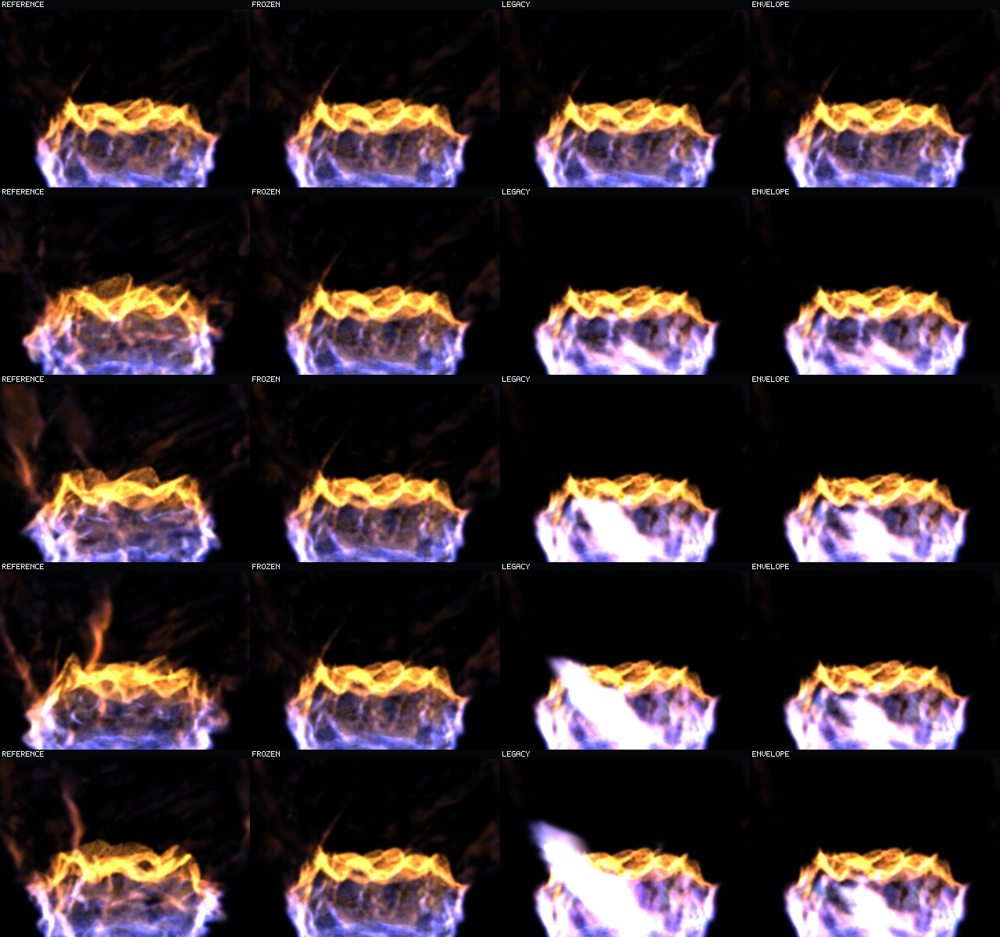
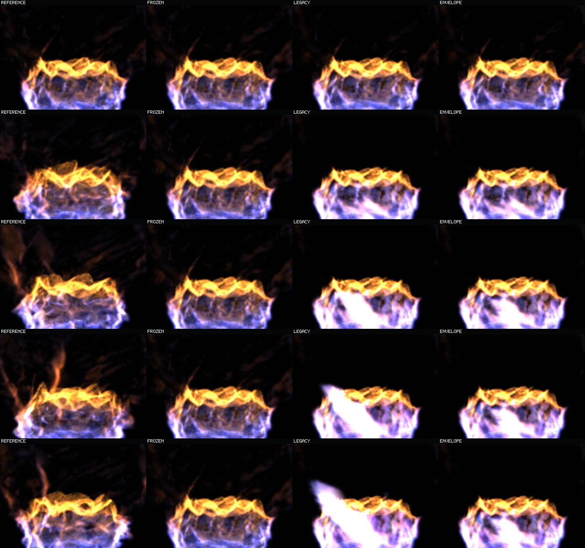
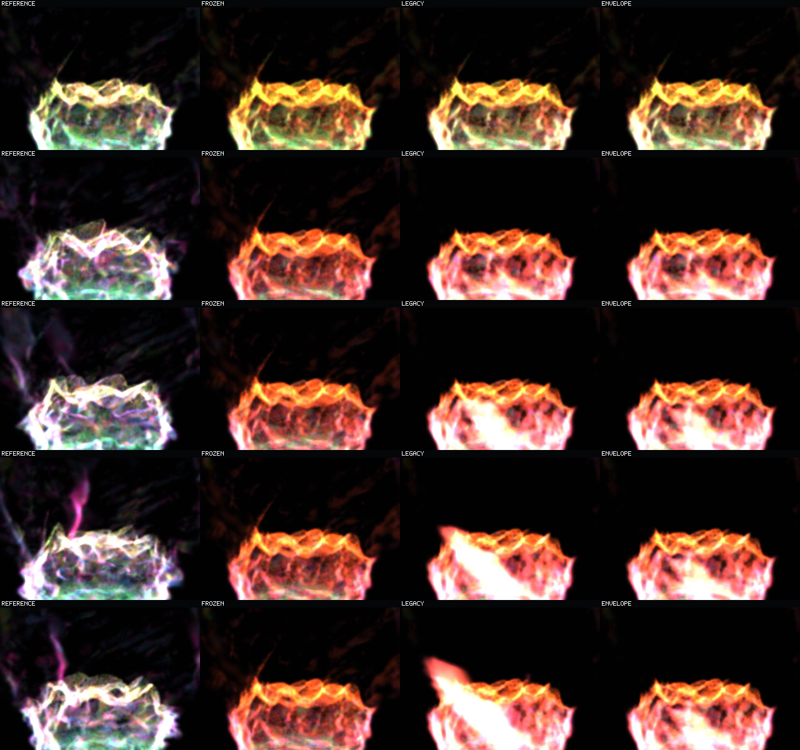
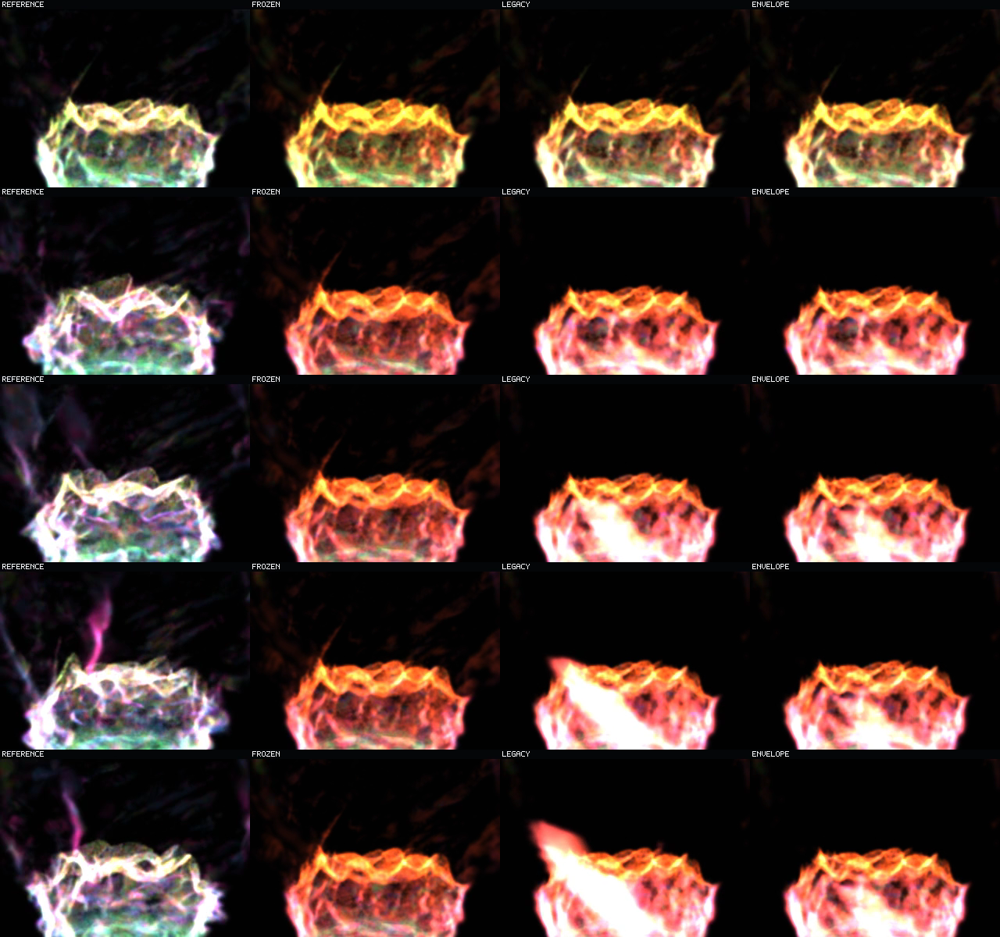

Verdict: the corrected loss does not remove the recurrent white-sheet collapse. It preserves identical support, raises cohort energy slightly, and makes the same late failure marginally brighter.
one-step-ratio support. Here legacy means support-budget mode, not the defective checkpoint.The videos and contacts run for 63 non-looping prediction steps at 160 ms per step. Contact rows run top to bottom: step 1 at 0.16 s, step 16 at 2.56 s, step 32 at 5.12 s, step 48 at 7.68 s, and step 63 at 10.08 s.
48c7bb6a.... Judge whether either prediction follows reference motion, whether the frozen panel stays static, and when the bright diagonal begins to dominate. The envelope suppresses support growth but does not stop state convergence.
8.3837%.
8.0043%. The visible failure class is unchanged; the corrected run is slightly brighter, not more coherent.0.625. The debug color does not alter opacity, selection, or recurrence. Use it to inspect stable, transported, born, and unmatched/death structure.

| Role | Defective late white | Corrected late white | Direction |
|---|---|---|---|
| Legacy support mode | 13.3061% | 13.7234% | Worse |
| Envelope support mode | 8.0043% | 8.3837% | Worse |
Terminal support and IoU are byte-for-byte behaviorally identical between models. The corrected envelope's late RGB MSE to reference rises from 3234.86 to 3268.30. Full receipts are under receipts/.
This one-basin result falsifies physical visible-energy channel correction as a mitigation for this matched long-horizon recurrence. It does not reject the corrected objective for one-step learning, other rollout curricula, larger models, or other basins. No live renderer or runtime composition was changed.